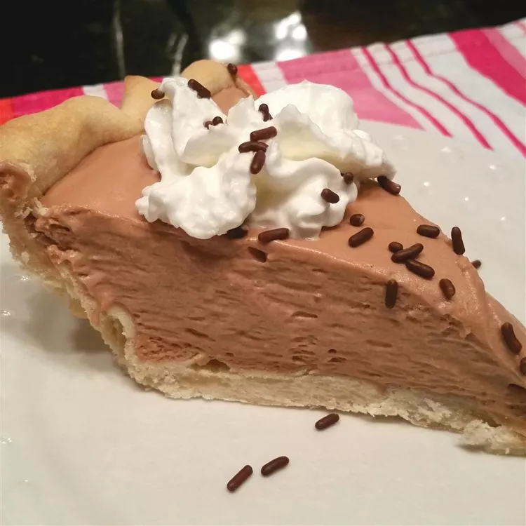

Creamy Chocolate Mousse Pie
The light-as-air mousse in this pie gets its sweetness from melted marshmallows and milk chocolate. Use
your favorite pie crust recipe or a store-bought graham cracker crust.

Ingredients
- 1 ½ cups miniature marshmallows
- 1 (7 ounce) bar milk chocolate candy
- ½ cup milk
- 2 cups heavy whipping cream
- 1 (9 inch) pie shell, baked
Directions
- Heat marshmallows, chocolate candy, and milk in a saucepan over low heat until marshmallows and chocolate are
melted, stirring constantly. Allow mixture to cool completely.
- Beat heavy cream in a large bowl until stiff peaks form. Lift your beater or whisk straight up: the
whipped
cream will form sharp peaks. Gently fold cooled chocolate mixture in whipped cream until well mixed; pour into
baked pie shell. Refrigerate until set, about 3 hours.
Go to Recipe 1
Go to Recipe 3